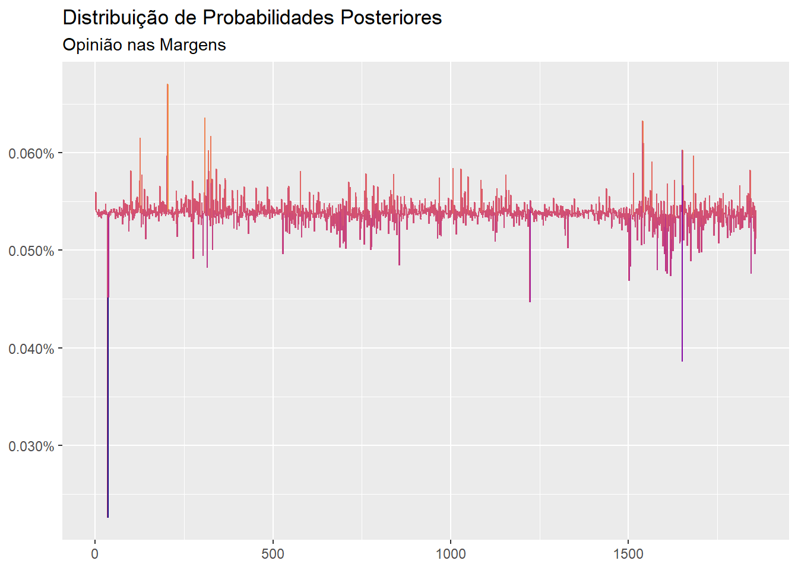

Dando sequência aos posts anteriores, hoje mostro como construir opiniões nas distribuições marginais.
Mais uma vez, para facilicar a reprodução dos resultados, uso o dataset EuStockMarkets que acompanha a instalação do R:
x <- diff(log(EuStockMarkets))
head(x)## DAX SMI CAC FTSE
## [1,] -0.009326550 0.006178360 -0.012658756 0.006770286
## [2,] -0.004422175 -0.005880448 -0.018740638 -0.004889587
## [3,] 0.009003794 0.003271184 -0.005779182 0.009027020
## [4,] -0.001778217 0.001483372 0.008743353 0.005771847
## [5,] -0.004676712 -0.008933417 -0.005120160 -0.007230164
## [6,] 0.012427042 0.006737244 0.011714353 0.008517217Vamos assumir que o time de econometria (após algumas linhas de código e meia dúzia de derivadas) conclui que a distribuição Student-t assimétrica é a que melhor se adapta aos dados em questão:
library(cma)
estimation <- fit_t(x, symmetric = FALSE)
estimation## # Margins Estimation
## Converged: TRUE
## Dimension: 4
## AIC: -52711.16
## Log-Likelihood: 26374.58
## Model: Asymmetric Student-tO pacote cma não está no CRAN e para instala-lo você deverá rodar o comando devtools::install_github("Reckziegel/CMA") no console. Esse pacote não é essencial para o post de hoje, mas será fundamental quando for comentar sobre opiniões nas copulas. Assim, já fica a propaganda.
O pacote cma fornece algumas funções interessantes para geração de cenários. Vamos utilizar a função generate_margins para criar um painél largo de cenários com as mesmas propriedades estatísticas que encontramos em estimation:
t_margins <- generate_margins(model = estimation, n = 100000)
t_margins## # New Margins
## marginal: << tbl 100000 x 4 >>Utilizaremos esse novo painél para construir as opiniões:
library(ffp)
prior <- rep(1 / 100000, 100000)
views <- view_on_marginal_distribution(x = x, simul = t_margins$marginal, p = prior)
views## # ffp view
## Type: View On Marginal Distribution
## Aeq : Dim 16 x 1859
## beq : Dim 16 x 1library(ggplot2)
prior_x <- rep(1 / nrow(x), nrow(x))
ep <- entropy_pooling(p = prior_x, Aeq = views$Aeq, beq = views$beq, solver = "nloptr")
autoplot(ep) +
scale_color_viridis_c(option = "C", end = 0.75) +
labs(title = "Distribuição de Probabilidades Posteriores",
subtitle = "Opinião nas Margens",
x = NULL,
y = NULL)
cond_moments <- ffp_moments(x = x, p = ep)
# Location Matches
round(cond_moments$mu / colMeans(t_margins$marginal) - 1, 2)## DAX SMI CAC FTSE
## 0.02 -0.01 0.01 -0.13# Dispersion Matches
round(sqrt(diag(cond_moments$sigma)) / apply(t_margins$marginal, 2, sd) - 1, 2) ## DAX SMI CAC FTSE
## 0.01 0.01 0.00 0.00estimation$chi <- 2.0
estimation$mu <- estimation$mu * 0.9
new_margins <- generate_margins(model = estimation, n = 100000)
views2 <- view_on_marginal_distribution(x = x, simul = new_margins$marginal, p = prior)
ep2 <- entropy_pooling(p = prior_x, Aeq = views2$Aeq, beq = views2$beq, solver = "nloptr")
cond_moments2 <- ffp_moments(x = x, p = ep2)
# Location Matches
round(cond_moments2$mu / colMeans(new_margins$marginal) - 1, 2)## DAX SMI CAC FTSE
## 0 0 0 0# Dispersion Matches
round(sqrt(diag(cond_moments2$sigma)) / apply(new_margins$marginal, 2, sd) - 1, 2)## DAX SMI CAC FTSE
## 0 0 0 0cond_moments2$mu / cond_moments$mu## DAX SMI CAC FTSE
## 1.048120 1.084042 1.069445 1.277290